10월 31일(토) 할로윈이 2020년 이후 처음으로 토요일에 옵니다. 주말 술집 성수기와 겹칩니다. 이번 주 세왕상사 주류동향은 서울시가 관리하는 14곳 안·밖, 입장형·테이블형 네 칸으로 나눠 매장 25곳의 준비를 실측했습니다.
기사의 수치와 공개 게시물에서 세운 '실측'은 실제 매출·방문·판매량을 뜻하지 않습니다. 이 글은 그 자료를 참고해 우리 매장에서 확인할 사항을 정리한 요약입니다.
1. 내 매장이 '14곳 안'인지 '밖'인지 먼저 보세요
서울시는 2025년 할로윈 기간(10/24~11/2) 인파밀집 관리 지역 14곳을 지정했습니다 — 이태원·홍대·성수·건대·강남역·압구정·명동·익선동 등 중점 8곳 포함. 안이면 당일 교통 통제·납품 차량 진입을 미리 확인하고, 밖이면 금·토 중 어느 날에 힘줄지를 먼저 정하세요.
- 14곳 안·입장형: 이벤트 + 입장 인원 상한·대피로·신분증 확인
- 14곳 안·테이블형: 코스튬 테이블 품목 서비스 1개 · 메뉴 개편 X
- 14곳 밖·입장형: 금·토 중 하루 티켓제 사전 판매
- 14곳 밖·테이블형: 소품 1단 + 품목 서비스 1개
2. 매장 25곳 실측 — 혜택은 '품목 하나'로
조사한 25곳 중 코스튬 테이블에 혜택을 건 곳은 12곳이었습니다. 품목 서비스(샷·메인 안주·소주·사이드) 5곳, 콘테스트 4곳, 깜짝 선물 1곳, %할인 1곳. 메뉴로 한 일은 세 갈래 — 품목 서비스·패키지·색 바꾸기였고, 한정 음료를 새로 만든 술집은 0곳이었습니다. 기존 하이볼 1종에 색·잔만 바꾸는 수준이면 충분합니다.
3. 금요일 전 발주·소모품을 끝내세요
토요일은 이미 최고 매출일입니다. 할로윈 증분이 평일 할로윈보다 작을 수 있고, 코스튬 손님과 단체 손님이 섞이면 회전이 떨어집니다. 금요일 전 발주·소모품(얼음·탄산·잔)과 신분증 확인 1명 고정 — 분장 손님도 예외 없이 — 이 두 가지는 네 칸 모두 공통입니다.
출처: 세왕상사 주류동향 W44(2026.10.28), p.3·4·6·10. 기초자료: 서울시 미디어허브 2025.10.24, 서울신문 2025.10.27, 서울경제 2025.10.29, 세왕 AI센터 매장 조사 25곳(2026.10.18, 카카오맵 주소 확인), 썸트렌드 인스타그램 월별 언급량(2024.9~2026.10, 2026.10.18 수집). 기간과 분석 한계는 전체 PDF에 기재했습니다.
오픈 준비 중인 사장님께
아래는 정보지 내용을 창업 준비에 적용한 세왕상사의 추가 안내입니다. 업종과 주요 메뉴, 보관 공간과 냉장고 자리, 생맥주 장비, 오픈일과 첫 발주 일정을 함께 살펴보세요.
서울·경기에서 음식점·주점을 준비 중이시면 카카오톡에 '창업상담'과 지역·업종·오픈 예정일을 남겨주세요. 주류 구성과 첫 발주, 냉장고·생맥주 장비를 함께 상담합니다.
이번 호 전체 내용 — 폰에서 스크롤로 보기
13쪽 전부. 다운로드 없이 바로 스크롤.
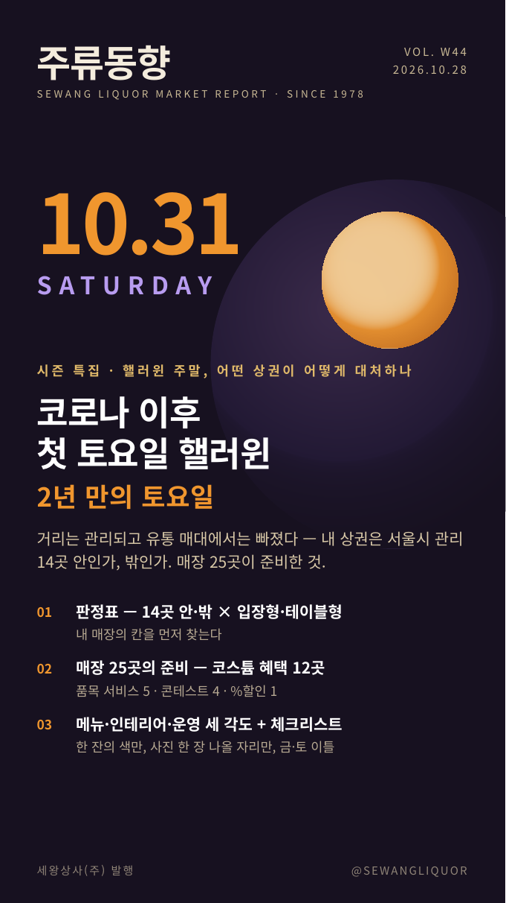
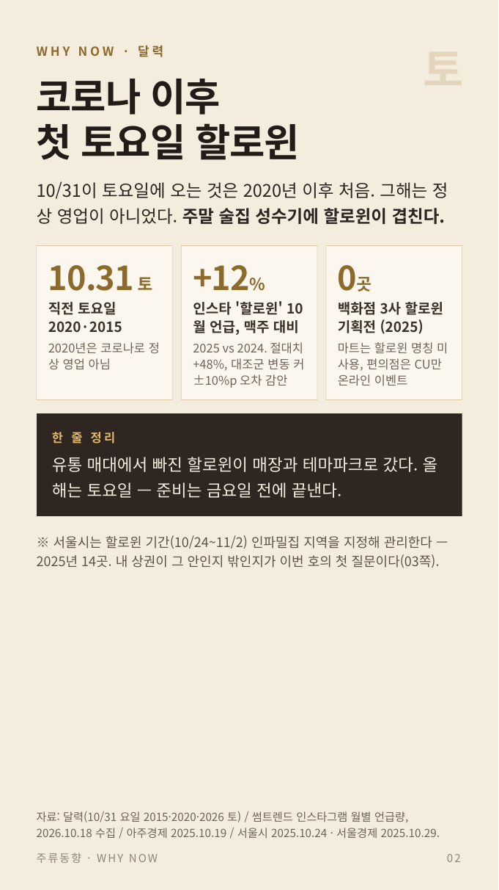
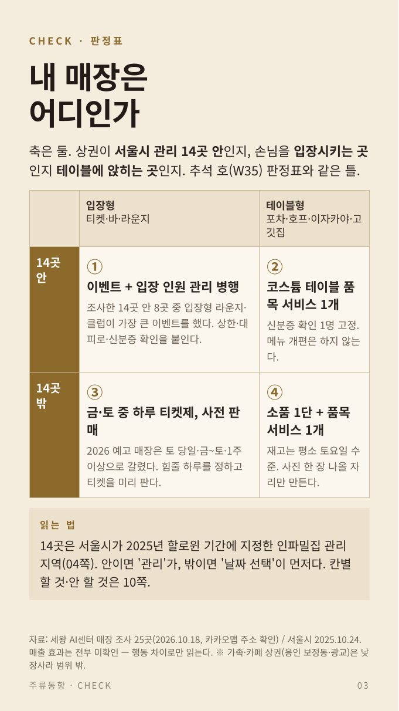
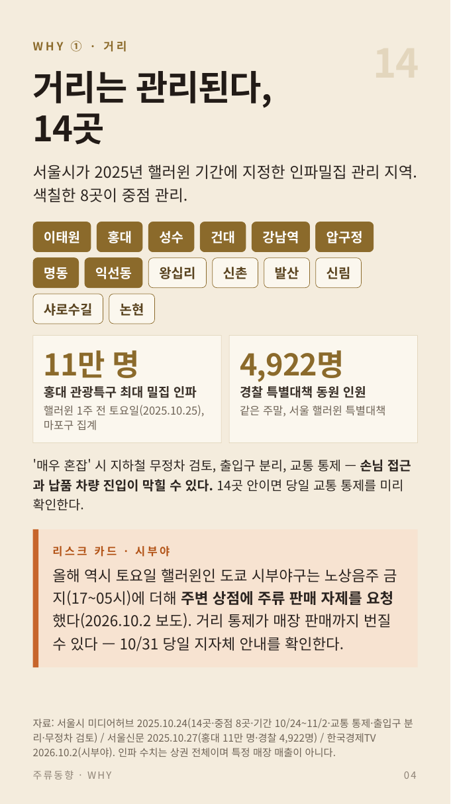
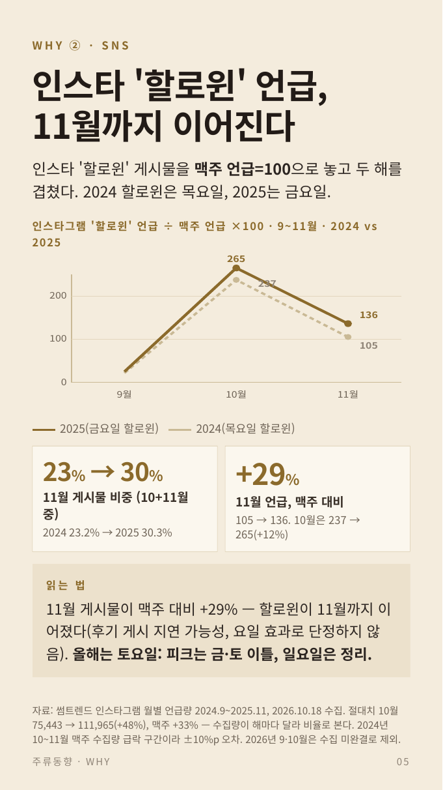
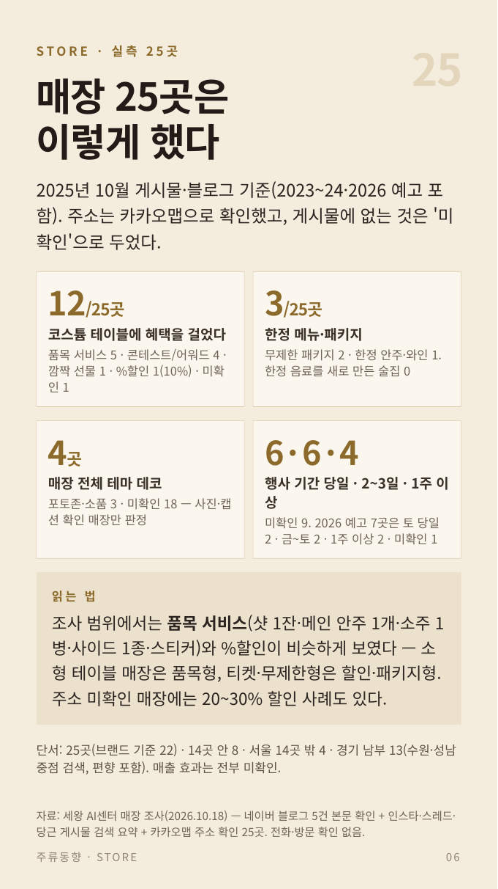
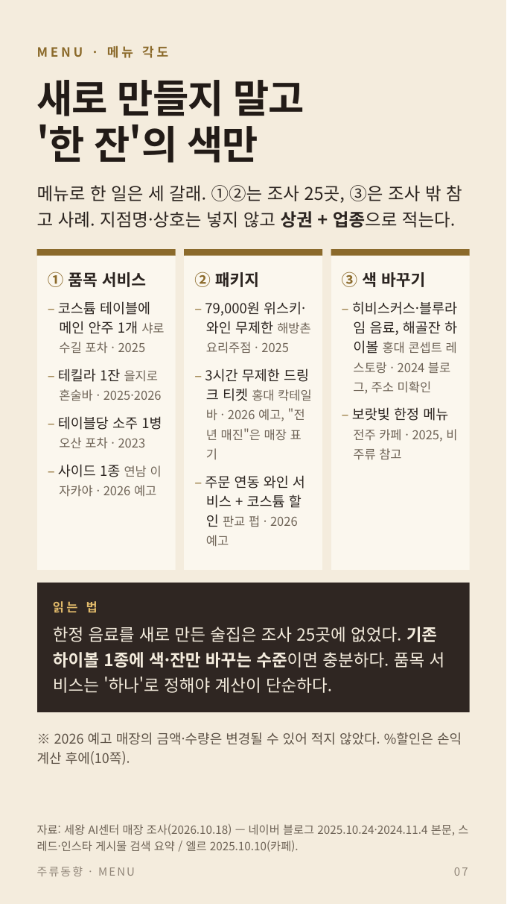
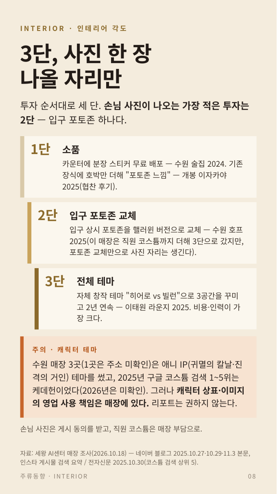
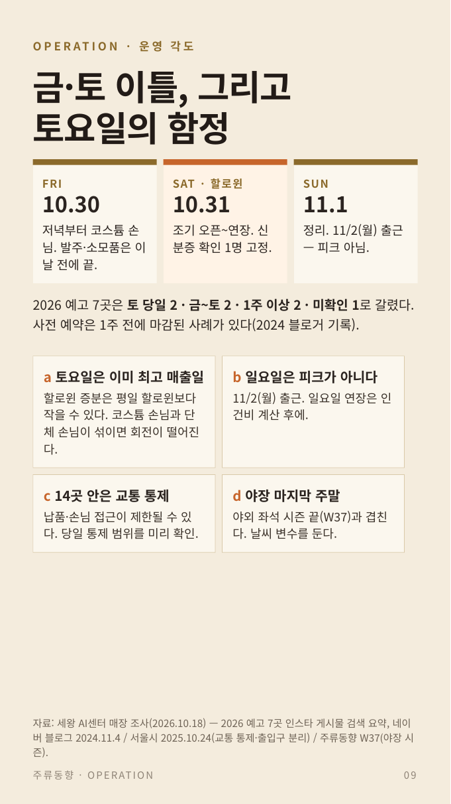
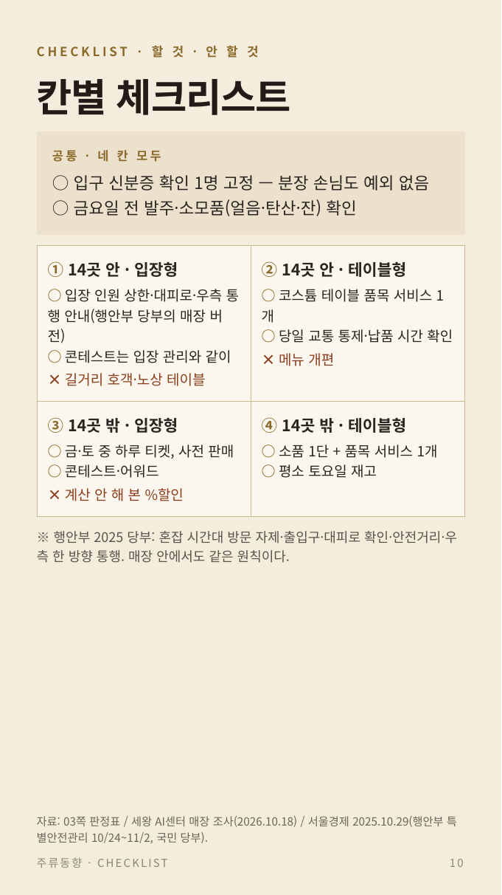
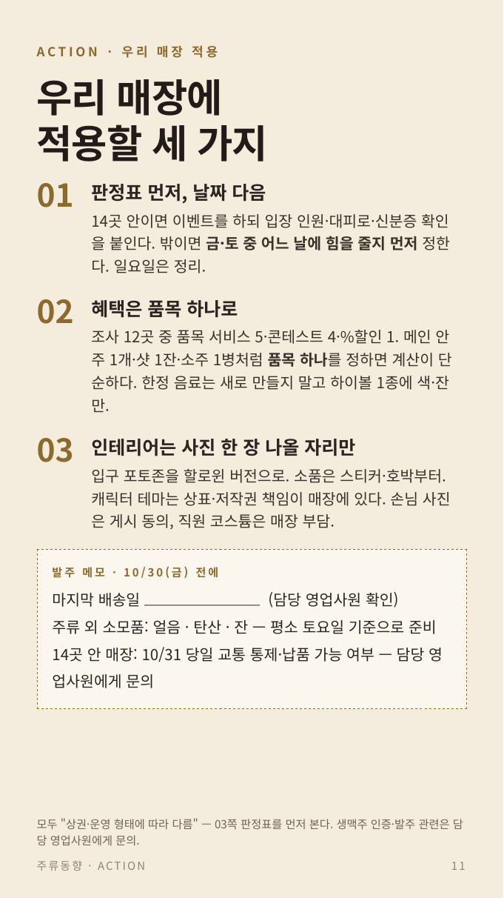
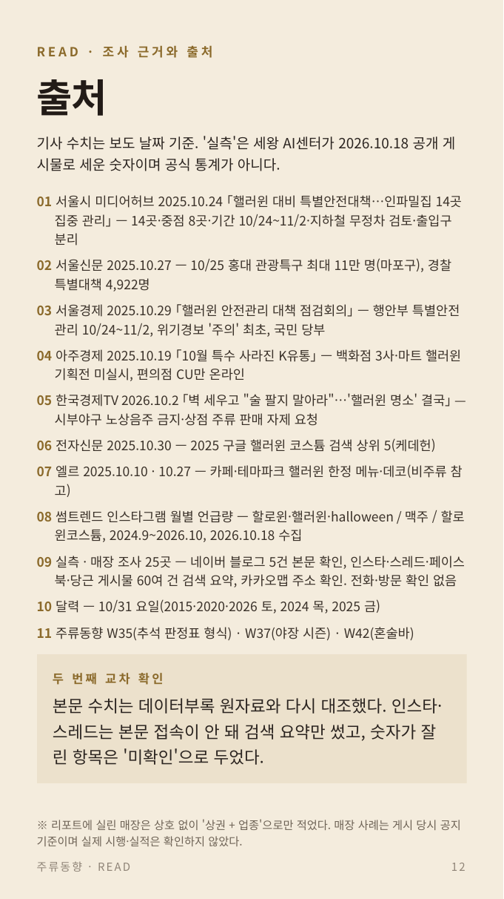
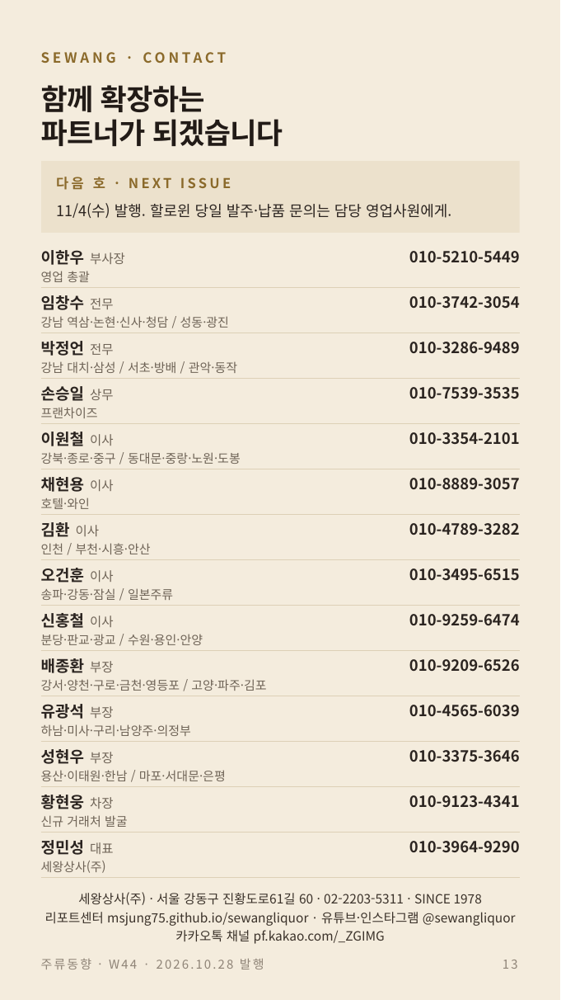
전체 PDF가 필요하시면 아래 버튼으로 다운로드하실 수 있습니다 (한국어/영어/일본어/중국어 4개 언어).
전체 정보지에서 이어서 볼 내용
서울시 관리 14곳 지도, 인스타 '할로윈' 언급 추이, 매장 25곳 실측 전수(품목·패키지·색 바꾸기), 금·토·일 타임라인, 칸별 할 것·안 할 것, 4개 언어 번역본(KO·EN·JP·ZH)을 담았습니다.